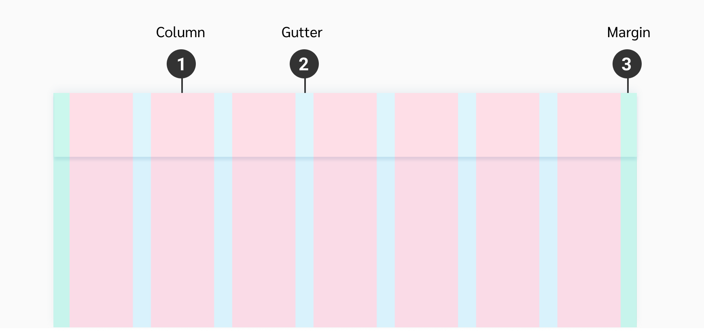
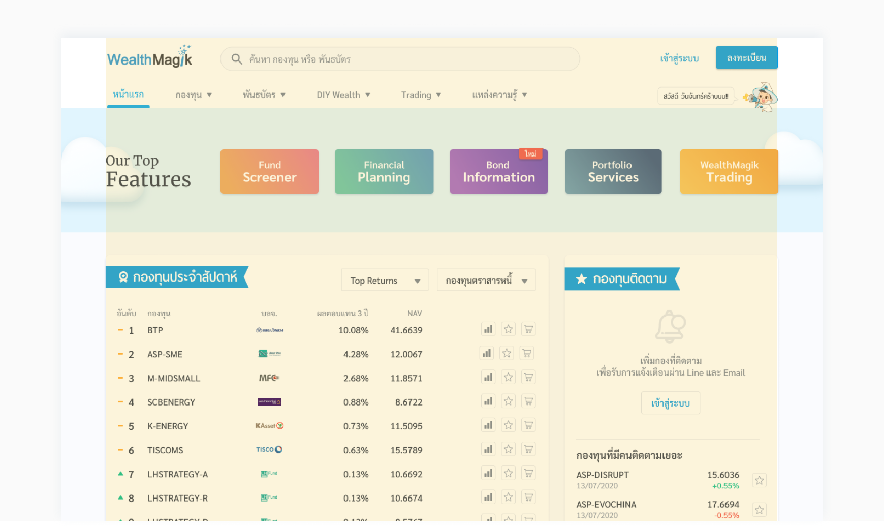
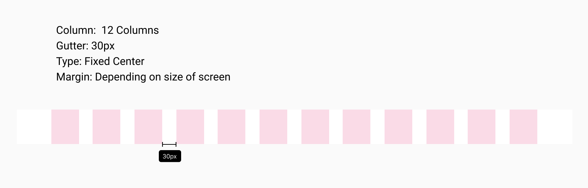

Layout
Layout หรือการจัดแบ่งหน้าจอ มีส่วนช่วยให้ user สามารถใช้งาน component ต่างๆ บนหน้าจอได้ถูกต้อง และรวดเร็วยิ่งขึ้น โดยการจัด Layout จะคำนึงถึงขนาดหน้าจอ, ของบนหน้าจอ และระยะห่างระหว่างของนั้นๆ
Overviews
ใช้ Responsive Layout Grid จะปรับะขนาดตามแต่ละ size ของหน้าจอ เพื่อให้สามารถแสดงผลในหน้าจอที่หลากหลายได้ โดยตัว Layout จะมีส่วนประกอบดังนี้
One Region Layout
คือ Layout ที่ทั้งหน้ามีพื้นที่เดียว ใช้ในหน้าส่วนใหญ่ของเว็ปไซต์
 Two Regions Layout
เป็น Layout ที่พื้นที่ในหน้าถูกแบ่งเป็น 2 ส่วน
1. Left Panel จะถูก Fixed ไว้ด้านซ้ายมือและขนาดเท่าเดิมอยู่ตลอด
2. Content จะถูกวางด้วย Reponsive Layout 12 Column
Breakpoint
| Mobile Portrait | Mobile Landscape | Tablet | Desktop | Large Desktop | |
|---|---|---|---|---|---|
| Screen Width | 0-575px | 576-767px | 768-1279px | 1280-1480px | 1481px+ |